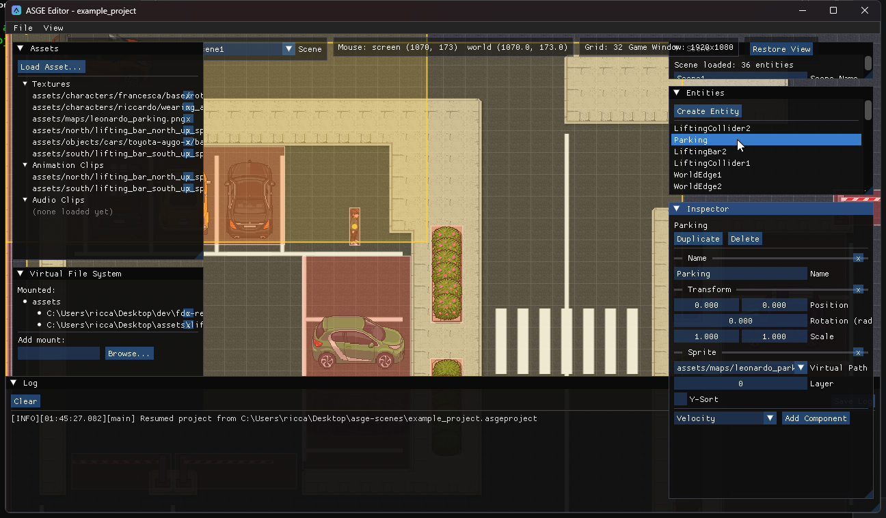
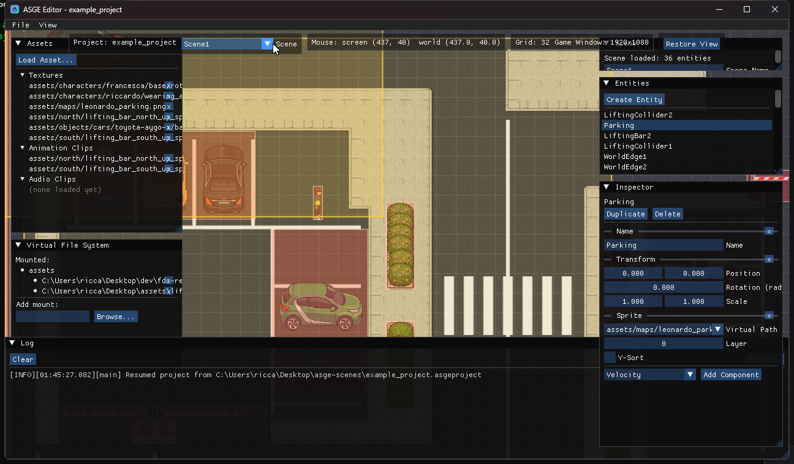
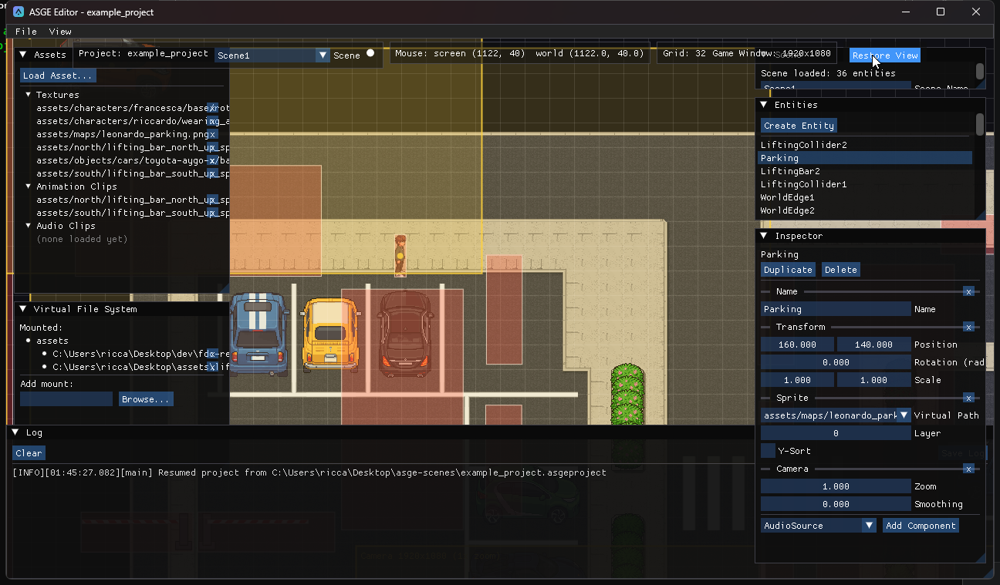
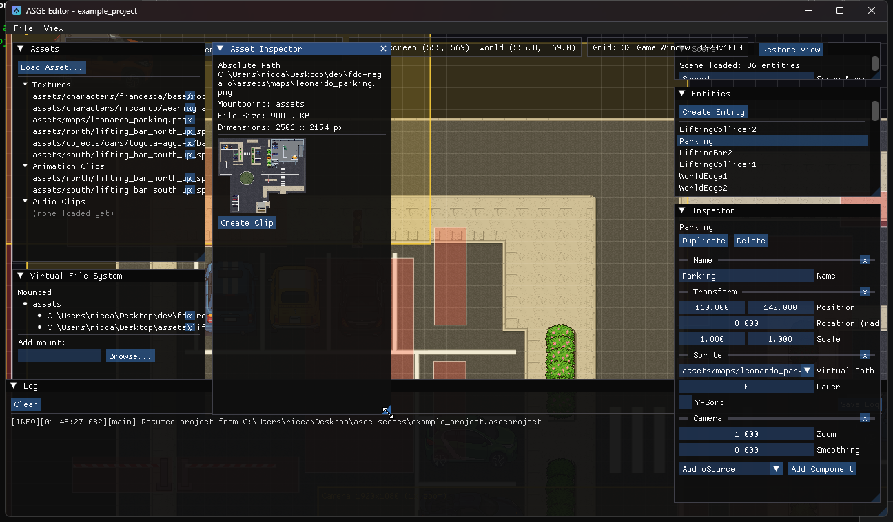
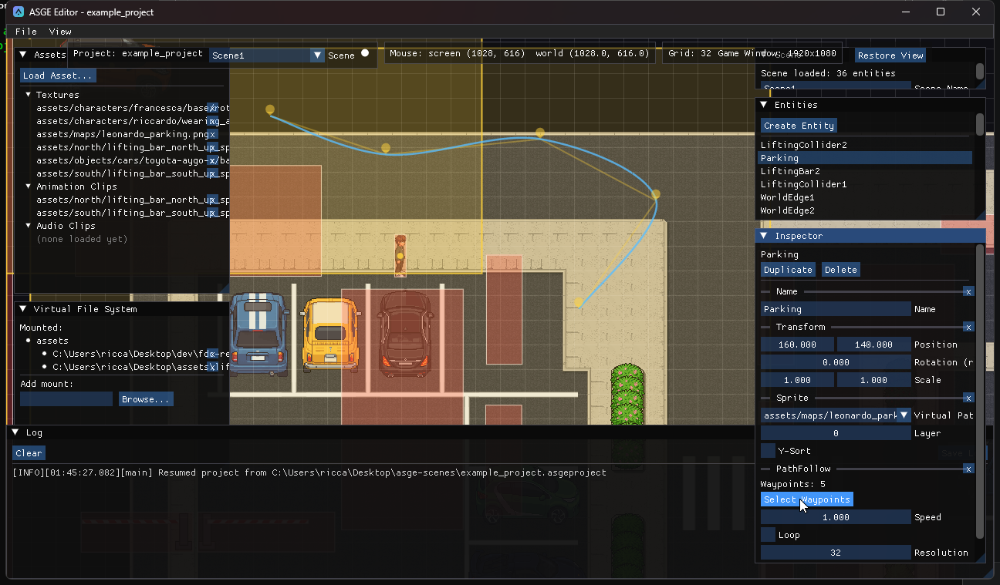

asge-editor
A native ImGui-based editor for authoring ASGE scenes visually: place and configure entities, wire up components, manage textures/animations/audio, and organize a project's scenes -- without hand-writing TOML. It's a plain executable alongside the engine's other example binaries, built from the same CMake tree.

Build & run
cmake --preset windows-editor-debug
cmake --build --preset windows-editor-debug --target asge-editor
# binary lands at bin/Debug/asge-editor.exeThe editor never links against or depends on Game/IGameState --
it drives asge::ecs::Registry, SceneManager, AssetManager and
IRenderer directly. See Installation for the full build setup.
What it covers
Six areas, each with its own page below.

Projects & Scenes
Create/open a project, manage multiple scenes, autosaved sessions
Entities & Components
The Inspector, every component type, add/remove, live editing

Viewport & Navigation
Pan/zoom, the world grid, translate gizmo, camera/game-window previews

Assets & VFS
Mounts, the Asset Browser/Inspector, and the in-editor spritesheet slicer

Advanced Editing
PathFollow waypoints and Collider shapes, authored on the viewport
per release
Editor Releases
Download the .exe/.deb/.dmg installer for each tagged version